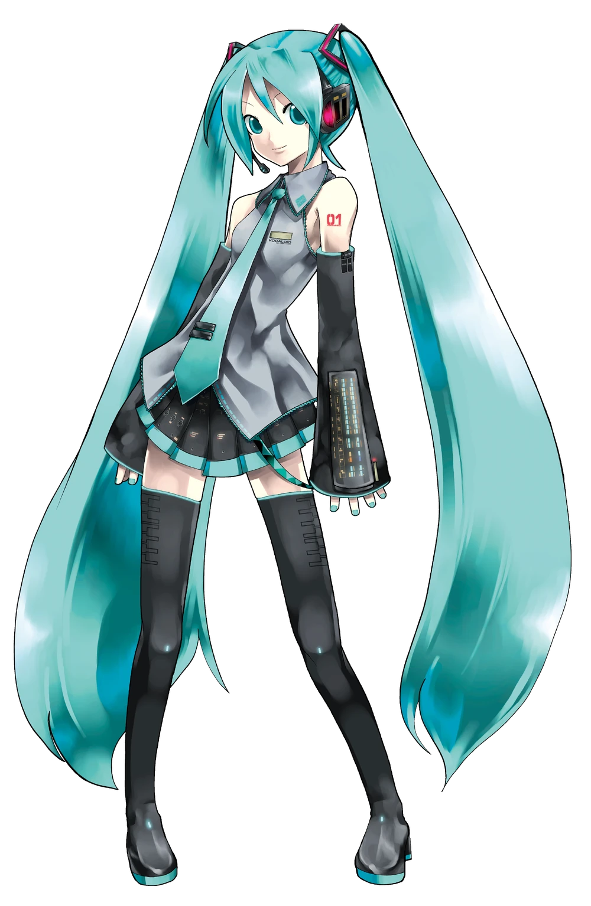

What is Vocal Synthesis?
Vocal Synthesizers, or VSynths, are a type of instrument made
by taking a recording of someone's voice and splicing it tofether to
make music.
The original method of this was having the voice provider
pronounce every consonant and vowel separately, then putting the
sounds together, or CV method.
The next method develped had the voice provider pronounce the
phonemes in a vowel/consonant/vowel method, for example 'aha' vs 'a'
And the most modern method is AI Voice Synthesis. In this
method the voice provider sings, and then using a nueral network the
computer generates phonemes.
The first product of this kind that gained popularity was
Hatsune Miku(the anime girl onscreen). When I say she's popular, I
mean she was searched so often when she was first made that she was
mistaken for something bots were searching and was then banned from
the internet for a week or so. She is the reason we have Miku Expo -
where a live band performs her songs while she dances either on a
screen or as a hologram.
She, and the Vocaloid program, are the face of the community as
a whole, with many artists making music with Miku alone.
And if you think you haven't heard Vsynth music before... Nyan
Cat was sung by Vsynth Momo Momone
Vocaloid is also known for having cheery melodies and
incredibly depressing lyrics - I only put happy ones on here because
school, though.
